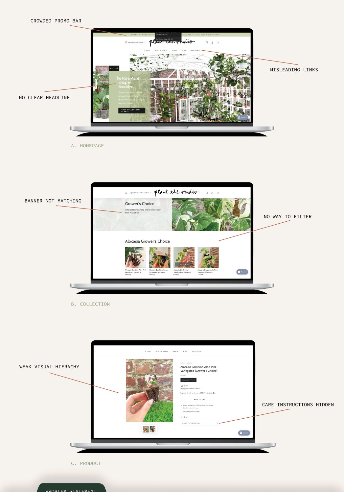
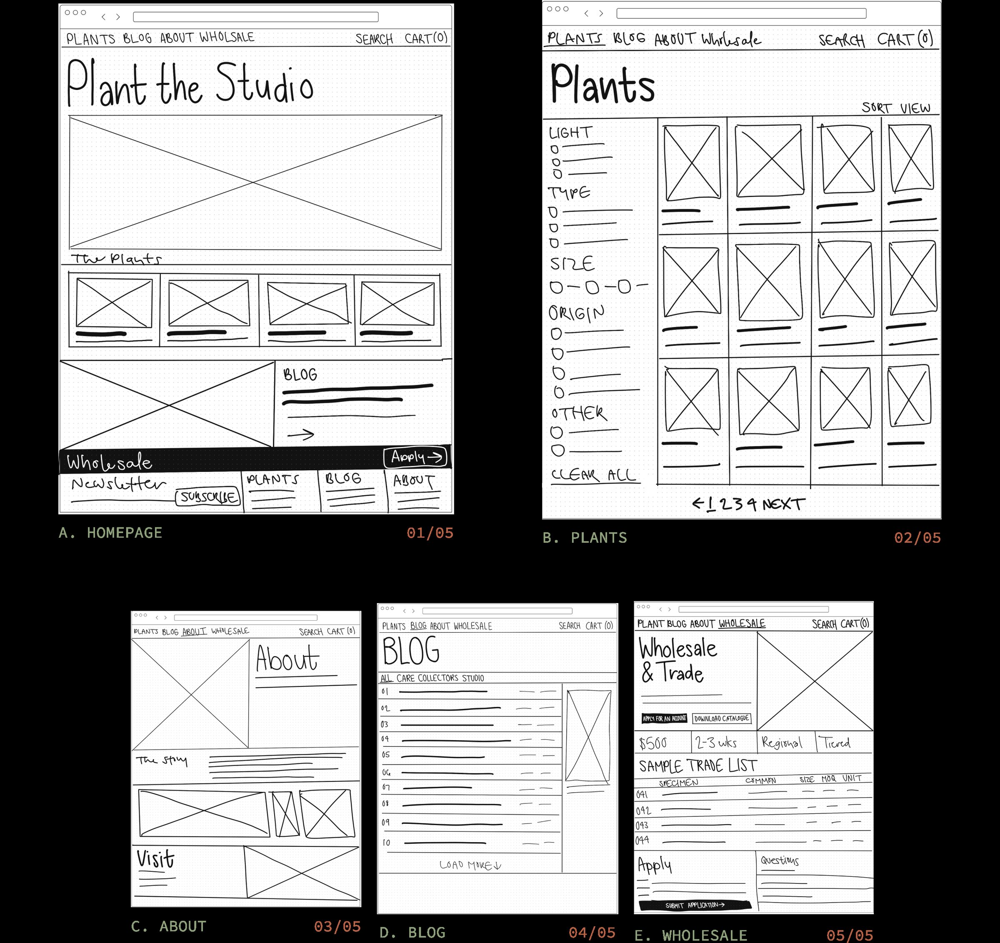
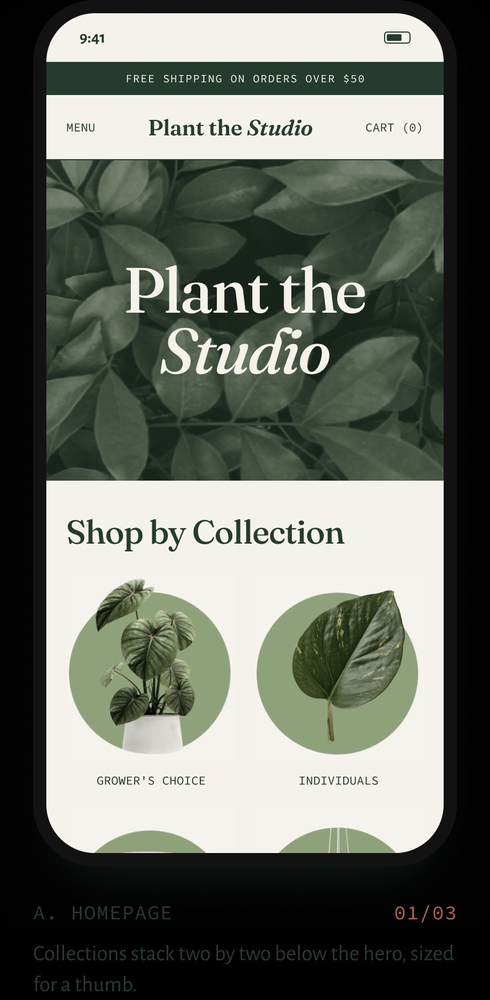
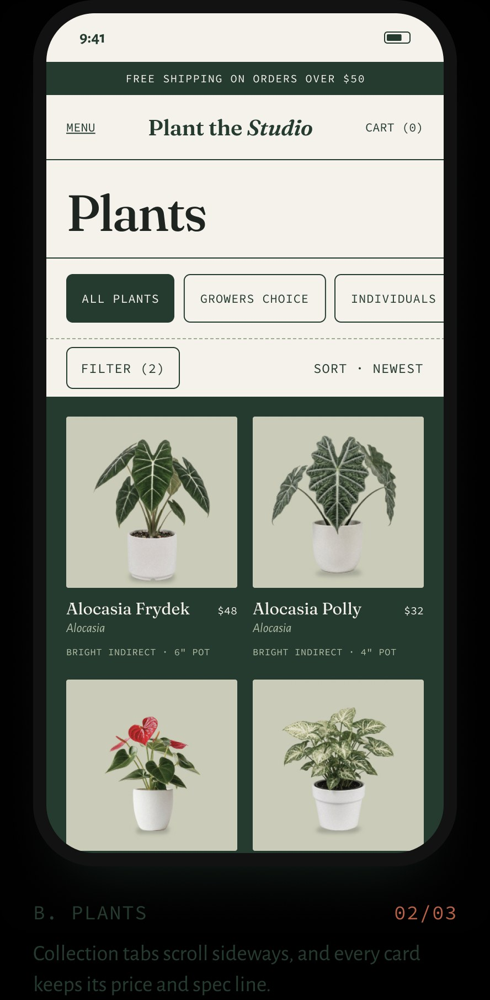
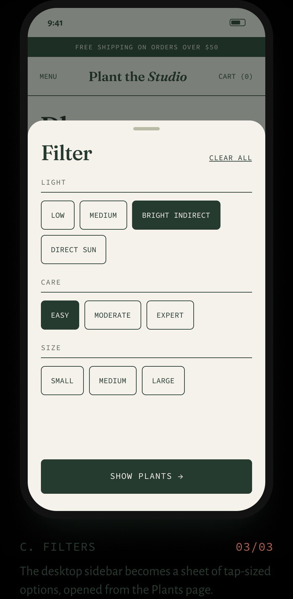
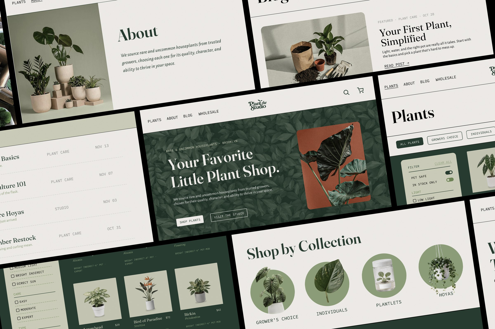
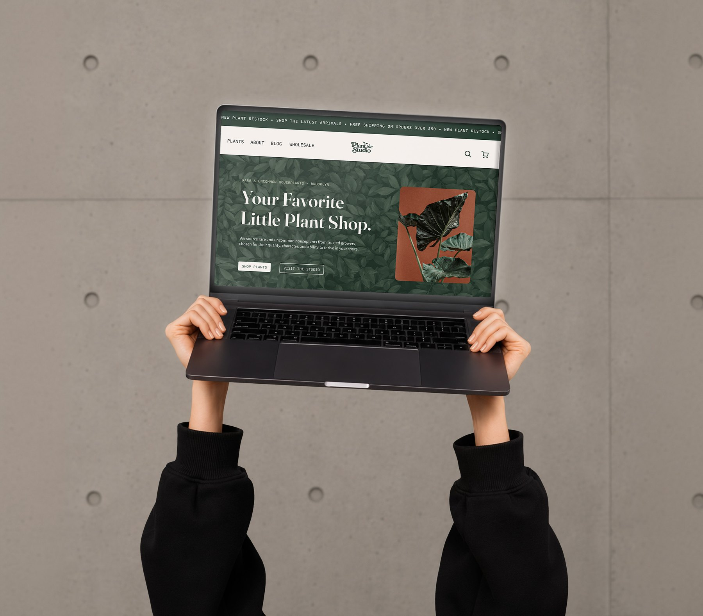

Plant the Studio

A better way to discover.
- Role
- UX/UI Designer
- Context
- Academic project; responsive web design and UX research
- Tools
- Figma
- Deliverables
- Responsive website design, UX research, competitor analysis, existing-site audit, usability testing
Plant the Studio is an existing online plant retailer offering a variety of houseplants, botanical products, and growing supplies. This project explores how a more cohesive brand identity and intentional digital experience can make plant discovery more intuitive.
As a solo designer, I approached the project by evaluating the existing storefront, researching competing plant retailers, and testing the shopping experience. The findings informed both a complete visual identity redesign and a series of redesigned website pages.
I approached the redesign with discovery and collecting as its central philosophy. Rather than treating plants as another product category, I wanted them to be the defining feature of the experience.
The goal was to create a distinctive botanical identity while making the shopping experience clearer, more engaging, and easier to navigate.
Shoppers have to work to find a plant.
The existing storefront presented an opportunity to improve both its visual identity and shopping experience. Promotional content competed with product discovery, navigation lacked clear pathways, and important product information was not always easy to locate.
The challenge was twofold: establish a stronger brand presence and create a more cohesive shopping experience that supports exploration rather than competing with it.
I began with an audit of the existing website, examining its navigation, product organization, visual hierarchy, and purchasing experience.
Competitor analysis helped identify opportunities to differentiate the brand while evaluating how other plant retailers presented their products and organized their storefronts.
I also conducted usability testing to examine how shoppers interacted with the existing experience and identify areas of friction.

The research informed four central priorities
-
01
Give in-stock plants and pricing greater visibility
-
02
Simplify navigation and product filtering
-
03
Make product details and purchasing conditions easier to understand
-
04
Establish a distinctive visual identity that reflects the botanical nature of the business
I developed two primary user personas representing different shopping behaviors.
-
01
The New Plant Owner
Maya Ortiz
Maya wants to discover an uncommon plant within her budget but needs reassurance about its care requirements, appearance, and what will actually arrive.
-
02
The Experienced Collector
Daniel Smith
Daniel prioritizes discovering new stock, comparing prices, and finding specific varieties without unnecessary browsing.
Their different levels of experience informed an approach that balances approachable product information with efficient product discovery.
I mapped Maya's first purchase, beginning with an Instagram restock post and ending with checkout.
The journey highlighted friction across five stages: discovering available plants, navigating collections, evaluating product details, understanding shipping requirements, and completing checkout.
These findings informed opportunities to improve product visibility, simplify terminology, clarify purchasing information, and reduce unnecessary interruptions.

I developed a new visual identity inspired by botanical documentation, editorial publishing, and the organic character of plant collecting.
The identity combines forest green, sage, warm neutrals, and muted terracotta with expressive typography and a structured graphic language.
The visual system establishes a more recognizable brand presence while creating a flexible foundation for digital applications.
I color-graded individual photographs to complement the palette, which gives an otherwise varied collection of products one cohesive look.
The redesigned website pages apply the new identity to a more intentional e-commerce experience.
Permanent collections and restock sections on the homepage give shoppers a reason to come back, and an organized, filterable catalog makes finding a specific plant immediate.
The homepage gives available plants greater prominence, while collection pages introduce clearer product organization and more intuitive browsing pathways.
Product presentation emphasizes the information shoppers need to make informed decisions. Additional botanical imagery and interactive hover states reveal close-up details, encouraging exploration while giving individual plants greater visual presence.






The strongest design decisions are often the ones you don't notice. Every interaction and visual choice should have a purpose, whether that's communicating identity, improving discovery, or quietly solving a problem.